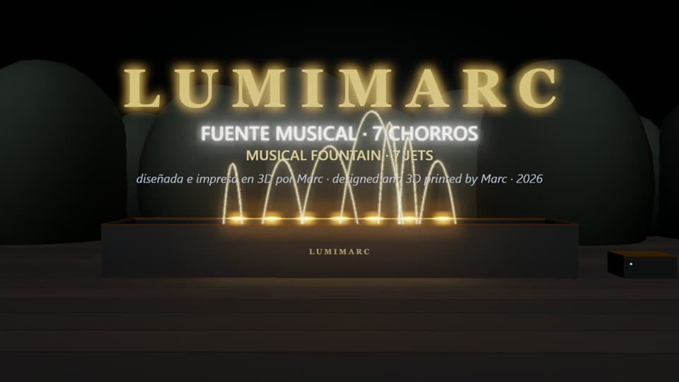
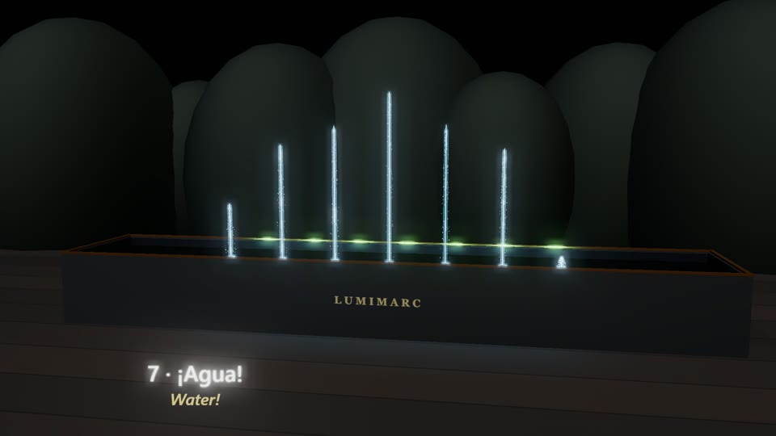
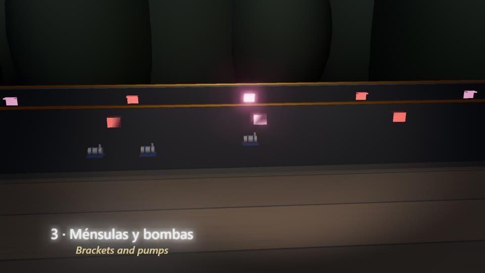
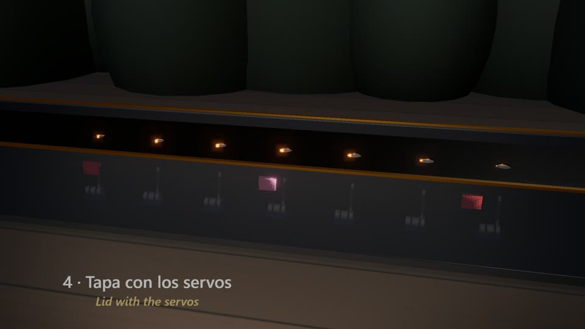
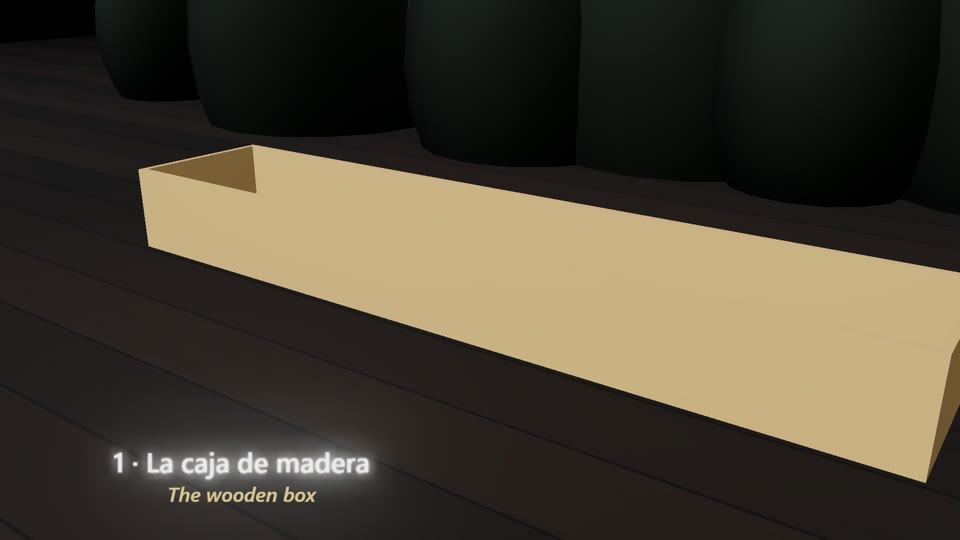
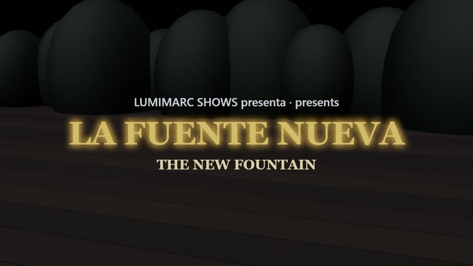

La fuente
Diseñada e impresa en 3D por Marc. Cada chorro tiene su bomba con altura regulable, un servo que lo inclina y un aro de luces LED.
7chorros de agua
0–100 %altura de cada chorro (MOSFET)
±20°inclinación con servos
DMXse conecta a las luces del escenario






Vídeos virtuales
Así se ven algunos espectáculos en el simulador del programa. Cada golpe de la música está coreografiado a mano.
Levitating · el cohete
Within
Time To Say Goodbye
Fuente Musical DMX
El programa para crear espectáculos de agua, luz y música. Gratis.
- Línea de tiempo con bloques: alturas, rampas, inclinación y colores
- Simulador 3D para ver el show sin agua
- Conexión con Arduino (USB) y con luces DMX
- Se actualiza solo cuando hay versión nueva o shows nuevos
⬇ Descargar para Windows
🍎 Descargar para Mac
Última versión
Windows 10/11 o Mac · necesita Chrome o Edge · la música la pones tú
Se descarga un zip: descomprímelo y abre el instalador.
En Mac, la primera vez: clic derecho sobre la app → Abrir
Se descarga un zip: descomprímelo y abre el instalador.
En Mac, la primera vez: clic derecho sobre la app → Abrir
Novedades
Lo último que hemos hecho.
🔐 Zona de Marc
Solo para el creador: entra con su cuenta de Microsoft.